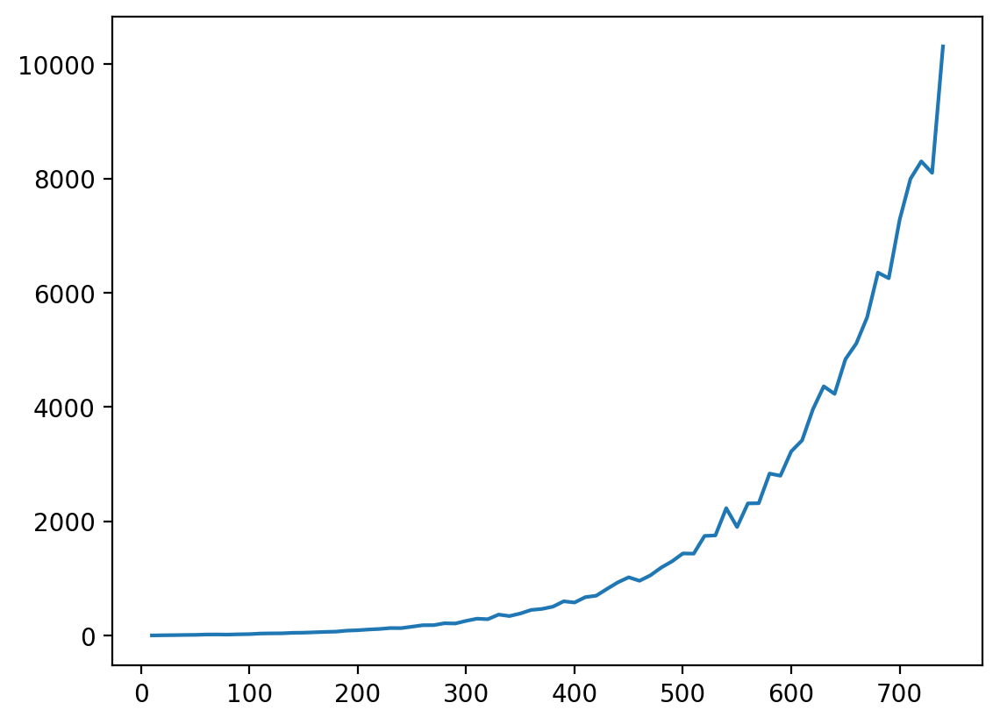

Quasi-orthogonal representations
Tuesday September 29, 2026
I am basically satisfied that we understand how neural nets represent things internally. First, in high dimensions there are exponentially many nearly orthogonal directions to use, meaning a very large number of things can be represented, and many of them at once (in superposition). Second, attention mechanisms allow for encoding structured representations.
Not enough neurons
Modern neural nets are big, but it's hard to compete with the number of possible concepts. If we have to use a separate neuron for everything, we need a huge number. An extreme version of this idea is the unit/value hypothesis as in Feldman and Ballard's 1982 paper.
People have sometimes found single neurons that seem to correspond to a single interpretable concept, as in the 2012 cat neuron or the 2017 sentiment neuron.
But the numbers just don't work out. GPT-3 had a vocabulary of around 50,000 tokens, and that immediately went to a layer of 12,000 nodes. It isn't enough to give every concept a node.
Distributed representations
You can represent many more concepts if you use combinatorial approaches, for example like Hinton's “coarse coding” (1986).
But because these representations are not orthogonal, it can be hard or impossible to disentangle them if you have more than one active at the same time.
Quasi-orthogonal dimensions
There are a lot of ways that things are strange in many dimensions, and one of them is that as you get into lots of dimensions there are exponentially many nearly perpendicular directions.
This is usually presented as coming from the Johnson–Lindenstrauss lemma, but the most directly applicable paper I've seen is the 1993 Quasiorthogonal dimension of Euclidean spaces.

My little experiment: The horizontal axis is the actual number of dimensions. The vertical axis is the number of quasi-orthogonal dimensions (within 10 degrees of perpendicular to all the others) based on drawing random (Gaussian) unit vectors. By 700 real dimensions, there are easily 7,000 nearly orthogonal directions.
This gives us a truly mind-blowing number of axes, and the ability to compose and decompose reasonable numbers of them when activated simultaneously (“superposition”).
The structure of language
If quasi-orthogonal dimensions provide the capacity, a model still needs to be able to relate things and build complex concepts from simpler ones. A version of this is the “binding problem” (1986): what goes with what?
One conceptual solution was “treelets” (2003), which looks just like X-bar theory or the sentence diagrams that elementary schools used to teach.
What we have now is attention, which, together with positional encodings (2017), provides a mechanism for the hierarchical processing these suggest.
And it works
Anthropic has shown that things like this happen in practice, and has used these ideas, for example to successfully extract interpretable features from their models.
This post is based largely on work from Anthropic's Transformer Circuits Thread. I presented a lightning talk on this topic in 2025.